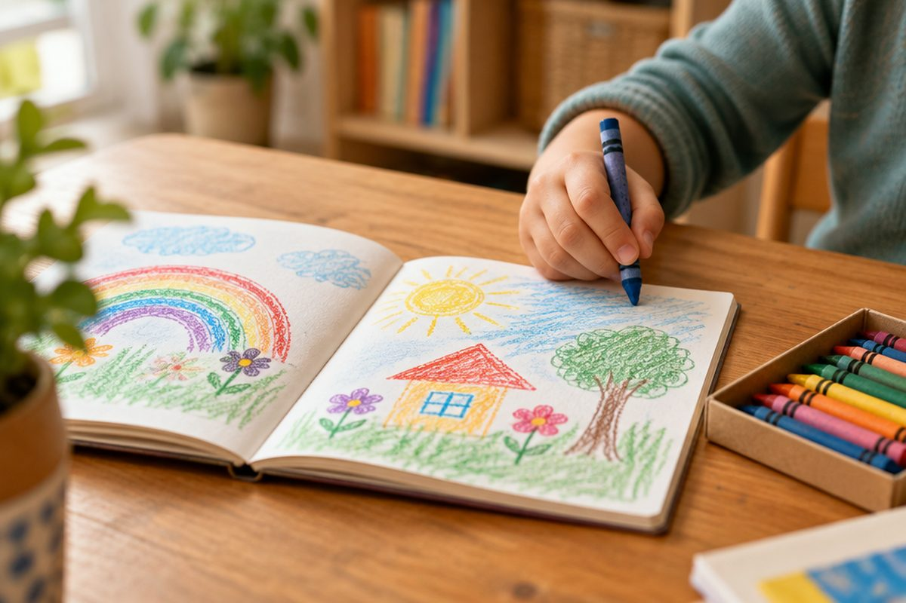

전체 단원 › 1학년 2학기 › 국어 › 3단계 · 그림일기 쓰기
그림일기는 어떻게 쓸까?

오늘 있었던 일을 그림과 글로 남겨요. 그림일기를 함께 써 봐요.
날짜와 날씨를 써요
맨 위에 날짜와 요일을 써요.
날씨도 써요. 맑음, 비처럼요.
10월 13일 화요일, 날씨: 맑음
기억에 남는 일을 골라요
오늘 한 일 가운데 하나를 골라요.
가장 기억에 남는 일이 좋아요.
동생과 공원에서 그네를 탄 일
그림을 그려요
고른 장면을 그림으로 그려요.
누가, 어디에서, 무엇을 했는지 보이게 그려요.
그네를 타는 나와 웃는 동생
글을 써요
한 일을 차례대로 써요.
마지막에 생각이나 느낌을 써요.
동생과 공원에 갔다. 그네를 탔다. 정말 재미있었다.
핵심 낱말
- 일기
- 날마다 겪은 일과 생각을 적는 글
- 그림일기
- 그림과 짧은 글로 쓰는 일기
- 날씨
- 맑음, 흐림, 비, 눈처럼 하늘의 모습
- 느낌
- 일을 겪고 든 마음(재미있었다, 슬펐다)
꼭 알아야 할 표현
| 그림일기 | 그림과 글로 쓰는 일기 | |
| 날씨 | 하늘의 모습 | |
| 맑음 | ☀️ 해가 쨍쨍한 날씨 | [말금] |
| 흐림 | ☁️ 구름이 많은 날씨 | |
| 비 | 🌧️ 비가 오는 날씨 | |
| 눈 | ❄️ 눈이 오는 날씨 | |
| 월요일 | 일요일 다음 날 | [워료일] |
| 오늘은 동생과 공원에 갔다. | 🎈 한 일: 누구와, 어디에 | [오느른 동생과 공워네 갇따] |
| 그네를 탔다. | 한 일: 무엇을 | [그네를 탇따] |
| 정말 재미있었다. | 😄 느낌 | [정말 재미이썯따] |
한 줄 정리
- 그림일기 맨 위에는 날짜, 요일, 날씨를 써요.
- 기억에 남는 일 하나를 골라 그림으로 그려요.
- 한 일을 차례대로 쓰고, 마지막에 느낌을 써요.
학교 교육과정 연결
- [2국06-02] 일상의 경험과 생각을 글과 그림으로 표현한다.
- [2국03-04] 겪은 일을 표현하는 글을 자유롭게 쓰고, 쓴 글을 함께 읽고 생각이나 느낌을 나눈다.